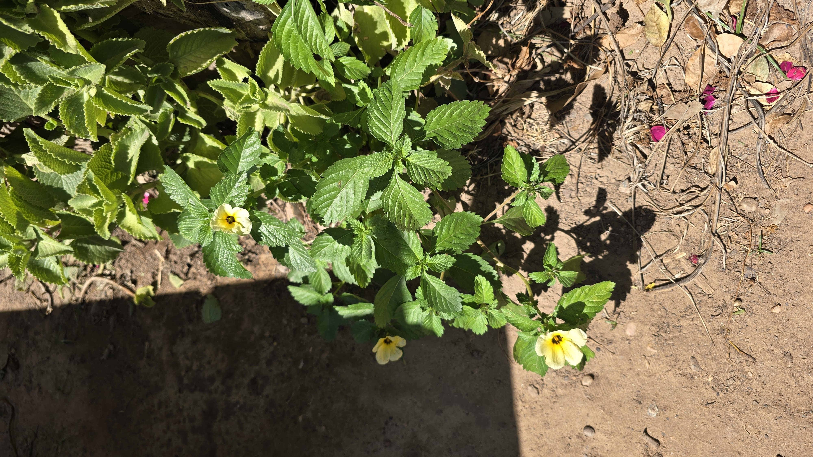
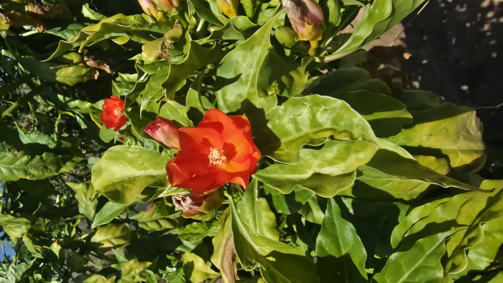
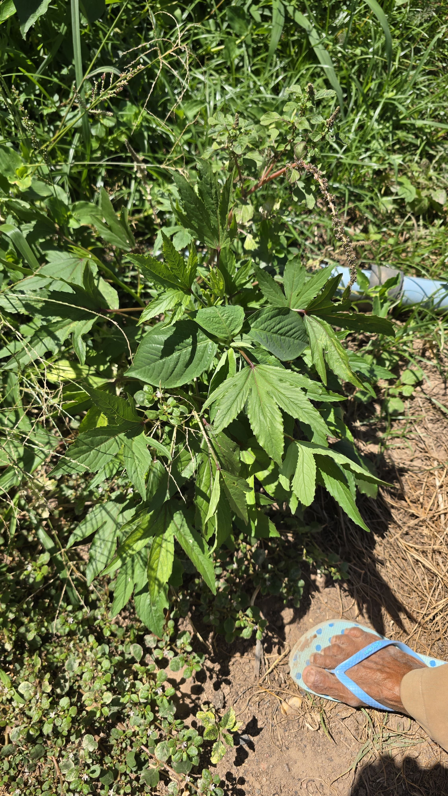

Saberes Tradicionais, Sustentabilidade e Inovação na Agricultura Familiar
📍 Floriano📍 Tanque do Piauí📍 Nazaré do Piauí📍 Guadalupe
Bem-vindo(a) à nossa Cartilha Digital!
Esta cartilha foi feita especialmente para agricultores familiares e produtores de hortas comunitárias dos municípios de Floriano, Tanque do Piauí, Nazaré do Piauí e Guadalupe, no Piauí.
Ela nasceu das visitas de campo do nosso Programa de Extensão da UESPI. Aqui, reunimos o que encontramos na prática dentro das hortas: três plantas fortes, nutritivas e fáceis de achar que podem melhorar a comida na mesa e gerar renda extra para as famílias.
💡 Como usar esta cartilha no celular:
Use os botões grandes no final da tela para Voltar ou ir para a Próxima Página.
Se preferir não ler, toque em 🔊 Ouvir página lá em cima para escutar o texto.
Toque em A+ para deixar as letras maiores.
🏛️ Realização Institucional:
Universidade Estadual do Piauí (UESPI) — Pró-Reitoria de Extensão, Assuntos Estudantis e Comunitários (PREX) — Campus Dra. Josefina Demes. Coordenação Geral: Prof. Dr. Daniel César Menêses de Carvalho. Colaboração: Leydiane Gleici Oliveira Medeiros.
🌿 O que são PANCs?
PANC significa Planta Alimentícia Não Convencional.
São plantas que a gente pode comer e que fazem muito bem à saúde, mas que quase não aparecem nos supermercados. Muitas delas nascem sozinhas perto das hortas, quintais e cercas — e às vezes são chamadas de "mato", mesmo sendo um alimento rico!
💪 Mais Saúde na Mesa
São ricas em vitaminas, ferro, cálcio, fibras e proteínas. Ajudam a variar a alimentação da família sem gastar mais.
💰 Renda Extra
Podem ser vendidas frescas na feira ou transformadas em geleias, farinhas e pães caseiros com mais valor.
🗺️ O Nosso Bioma: Encontro do Cerrado com a Caatinga
Os municípios de Floriano, Tanque do Piauí, Nazaré do Piauí e Guadalupe (no Território Vales dos Rios Piauí e Itaueira) ficam em uma área muito especial chamada de ecótono — o encontro entre o Cerrado e a Caatinga.
☀️ Por que isso é uma vantagem para a horta?
Nosso clima tem sol forte e períodos secos.
As PANCs da nossa região já estão acostumadas com esse calor e essa terra.
Elas crescem com pouca água, resistem melhor às pragas e não precisam de veneno (agrotóxico).
Ao cuidar e usar essas plantas, nosso trabalho ajuda a proteger a natureza, valorizar o saber dos mais antigos e contribuir com metas mundiais de sustentabilidade (ODS 2, 4, 12, 13, 15 e 17 da ONU).
🌼 1. Chanana (Flor-do-guarujá)
Nome científico: Turnera subulata / Turnera ulmifolia

📷 Espaço da foto de campo: salve a foto da Chanana como imagens/chanana.jpg
Registro de campo do Programa de Extensão UESPI: Chanana em flor na horta comunitária.
👀 Como reconhecer na horta
Flor: Tem 5 pétalas amarelo-claro (quase creme) com o miolo bem escuro (marrom ou roxo).
Horário: Abre pela manhã com o sol e fecha perto do meio-dia.
Folhas: Verdes, com nervuras bem marcadas e bordinhas recortadas (parecendo uma serrinha).
💚 Para que serve e nutrientes
A flor é comestível e tem sabor suave e levemente adocicado.
Possui substâncias antioxidantes que protegem o corpo.
Atrai abelhas e polinizadores, ajudando toda a horta a produzir melhor.
Uso principal aqui: Geleia artesanal de flor de chanana.
⚠️ Boas Práticas de Segurança Alimentar
Só colha plantas que você tem 100% de certeza da identificação.
Não colha na beira de estradas movimentadas, perto de esgoto ou onde passam animais domésticos.
Lave bem as flores e folhas em água corrente limpa antes do preparo.
Use apenas as partes indicadas nas receitas (na chanana, use as pétalas/flores limpas).
🌺 2. Ora-pro-nóbis
Nome científico: Pereskia spp. (registro em campo: variedade de flor vermelho-alaranjada, Pereskia bleo)

📷 Espaço da foto de campo: salve a foto da Ora-pro-nóbis como imagens/orapronobis.jpg
Registro de campo do Programa de Extensão UESPI: Ora-pro-nóbis com flor vermelho-alaranjada e folhas viçosas.
👀 Como reconhecer na horta
Folhas: Grandes, verdes, brilhantes, grossinhas (carnosas) e levemente onduladas.
Flor: Nesta variedade encontrada em campo, a flor é bem chamativa, de cor vermelho-alaranjada.
Caule: Possui espinhos nos ramos — tenha cuidado ao colher!
💚 Para que serve e nutrientes
Conhecida como "carne vegetal": é muito rica em proteínas, ferro, cálcio e fibras.
Ajuda a combater a anemia e melhora o funcionamento do intestino.
Usos principais aqui: Farinha proteica, pão caseiro e frango ao molho.
⚠️ Boas Práticas de Segurança Alimentar
Cuidado com os espinhos do caule na hora da colheita: use tesoura ou luva se puder.
Lave folha por folha em água corrente e deixe de molho por 15 minutos em água com água sanitária própria para alimentos (1 colher de sopa para 1 litro de água), enxaguando bem depois.
Prefira consumir as folhas refogadas, cozidas ou secas em farinha para aproveitar melhor os nutrientes.
🍃 3. Vinagreira (Azedinha / Cuxá)
Nome científico: Hibiscus sabdariffa

📷 Espaço da foto de campo: salve a foto da Vinagreira como imagens/vinagreira.jpg
Registro de campo do Programa de Extensão UESPI: pé de Vinagreira crescendo na horta comunitária.
👀 Como reconhecer na horta
Folhas: Verdes, com formato recortado em pontas (lembrando uma mão aberta) e bordas serrilhadas.
Talos: Os cabinhos das folhas costumam ter uma cor levemente avermelhada ou arroxeada.
Sabor: Azedinho muito agradável, bem tradicional na cozinha nordestina.
💚 Para que serve e nutrientes
Muito rica em Vitamina C, ferro, cálcio e fibras.
Ajuda a fortalecer a imunidade e facilita a absorção de ferro nas refeições.
Planta muito resistente ao calor do Piauí.
Uso principal aqui: Arroz de cuxá (cuchá).
⚠️ Boas Práticas de Segurança Alimentar
Escolha folhas verdes, firmes e sem manchas de fungos ou bichinhos.
Higienize bem em água corrente e solução clorada (1 colher de sopa de água sanitária própria para alimentos em 1 litro de água por 15 minutos) e enxágue.
Retire os talos mais duros antes de picar e cozinhar.
🍳 Caderno de Receitas Fáceis (Parte 1)
Receitas simples, econômicas e deliciosas para comer em casa ou vender na feira.
🌼 Geleia Artesanal de Flor de Chanana
Rende ~2 potes pequenos (150g)
Ingredientes:
2 xícaras (chá) de flores de chanana limpas (colhidas pela manhã)
2 maçãs médias picadas sem sementes (dá ponto firme natural)
1 xícara (chá) de açúcar (cristal ou demerara)
1 xícara (chá) de água limpa
Suco de meio limão
Modo de fazer:
Lave delicadamente as flores de chanana em água corrente e escorra.
Em uma panela, coloque as maçãs picadas, a água e o açúcar. Cozinhe em fogo médio por uns 15 minutos até a maçã amolecer bem.
Amasse as maçãs com um garfo (ou bata rapidamente) e acrescente o suco de limão e as flores de chanana.
Mexa em fogo baixo por mais 10 a 15 minutos, até engrossar e começar a soltar do fundo da panela.
Coloque ainda quente em potes de vidro bem lavados e fervidos. Guarde na geladeira.
🍃 Arroz de Cuxá (Vinagreira)
Serve 4 a 5 pessoas
Ingredientes:
1 maço grande de folhas de vinagreira bem lavadas
2 xícaras (chá) de arroz branco lavado
4 colheres (sopa) de gergelim torrado (opcional, mas dá o sabor tradicional)
1 cebola picada e 2 dentes de alho amassados
Cheiro-verde a gosto, 2 colheres (sopa) de óleo ou azeite e sal a gosto
4 xícaras (chá) de água quente
Modo de fazer:
Retire os talos grossos da vinagreira. Cozinhe as folhas em água fervendo por 5 minutos, escorra e pique bem miudinho (ou bata no pilão com o gergelim).
Em outra panela, aqueça o óleo e refogue a cebola e o alho.
Junte o arroz, refogue bem e adicione o sal e a água quente. Cozinhe até quase secar.
Quando o arroz estiver quase pronto, misture a pasta de vinagreira com o cheiro-verde.
Tampe a panela em fogo bem baixinho por 5 minutos e sirva quentinho!
🍲 Caderno de Receitas Fáceis (Parte 2)
Veja três jeitos práticos de aproveitar toda a proteína da Ora-pro-nóbis.
🌿 Farinha Proteica de Ora-pro-nóbis
Rende ~100g de farinha
Ingredientes:
Cerca de 500g de folhas frescas de ora-pro-nóbis (bem lavadas e secas com pano limpo)
Modo de fazer:
Espalhe as folhas em uma assadeira limpa, sem empilhar demais.
Leve ao forno bem baixinho (com a porta entreaberta) por cerca de 40 a 60 minutos, virando de vez em quando, até as folhas ficarem bem sequinhas e quebradiças na mão (sem queimar!). Dica: também pode secar na sombra em local bem ventilado e limpo por alguns dias.
Bata as folhas secas no liquidificador seco até virar um pó verde fino.
Peneire e guarde em pote de vidro limpo, bem fechado, longe da luz. Use 1 colher no feijão, cuscuz, sucos ou pães!
🍞 Pão Caseiro com Ora-pro-nóbis
Rende 1 pão grande (~500g)
Ingredientes:
3 xícaras (chá) de farinha de trigo
3 colheres (sopa) de farinha de ora-pro-nóbis (ou 1 xícara de folhas batidas com a água)
1 xícara (chá) de água morna
1 envelope (10g) de fermento biológico seco para pão
2 colheres (sopa) de óleo e 1 colher (sopa) de açúcar
1 colher (chá) de sal
Modo de fazer:
Misture a água morna, o açúcar e o fermento. Deixe descansar 5 minutos.
Junte o óleo, o sal, a farinha de ora-pro-nóbis e vá colocando a farinha de trigo aos poucos.
Sove a massa na mesa limpa por 8 a 10 minutos até ficar lisinha e macia.
Cubra com pano limpo e deixe crescer por 40 minutos (até dobrar de tamanho).
Modele o pão, coloque em forma untada e asse em forno médio (180 °C) por cerca de 35 minutos.
🍗 Frango ao Molho com Ora-pro-nóbis
Serve 5 a 6 pessoas
Ingredientes:
1 kg de frango em pedaços (caipira ou de granja)
2 xícaras (chá) de folhas de ora-pro-nóbis limpas e rasgadas grosseiramente
Colorau (corante), pimenta-do-reino, cheiro-verde, óleo e sal a gosto
2 xícaras (chá) de água quente
Modo de fazer:
Tempere o frango com alho, sal e pimenta. Doure os pedaços na panela com um fio de óleo.
Acrescente a cebola, o colorau e o tomate. Refogue bem até formar um molho cheiroso.
Coloque a água quente, tampe a panela e cozinhe por 20 a 25 minutos até o frango ficar macio.
Nos últimos 5 minutos, junte as folhas de ora-pro-nóbis e o cheiro-verde. Mexa suavemente até murcharem e desligue o fogo. Fica com um caldo encorpado e super nutritivo!
🎬 Vídeo Educativo do Projeto
Preparamos um vídeo especial resumindo a nossa pesquisa sobre as PANCs nas hortas comunitárias de Floriano, Tanque do Piauí, Nazaré do Piauí e Guadalupe.
▶️
Assista ao nosso vídeo no YouTube
O vídeo abre direto no aplicativo ou site do YouTube para economizar sua internet rural e ajustar a imagem automaticamente para o seu celular.
Por que as PANCs são tesouros escondidos nas hortas do Piauí;
Como reconhecer a Chanana, a Ora-pro-nóbis e a Vinagreira;
Ideias simples para transformar essas plantas em comida saudável e renda extra.
🎯 Quiz: Você já reconhece nossas PANCs?
Toque na resposta que você acha certa. É só para aprender brincando!
Responda as perguntas acima para ver sua pontuação!
🧮 Central de Calculadoras do Produtor
Use estas duas ferramentas simples para planejar suas receitas e calcular por quanto vender seus produtos na feira.
🥣 Ajuste as medidas da receita
Escolha a receita e diga quantas receitas (ou porções) você quer fazer hoje:
💰 Calcule seu Custo e Preço de Venda
Descubra quanto você gastou em cada unidade e por quanto pode vender para ter lucro justo.
📊 Preços Médios de Referência no Mercado (Produtos Artesanais)
Valores médios praticados em feiras agroecológicas e vendas artesanais no Brasil (use apenas como guia para a sua cidade):
Produto com PANC
Medida comum
Faixa média de venda
🌼 Geleia artesanal de flor de chanana
Pote de 150g a 200g
R$ 18,00 a R$ 30,00
🌿 Farinha proteica de ora-pro-nóbis
Pacote de 100g
R$ 15,00 a R$ 28,00
🍞 Pão caseiro com ora-pro-nóbis
Unidade (~450g a 500g)
R$ 14,00 a R$ 25,00
🍃 Maço de vinagreira / folhas frescas
Maço na feira local
R$ 4,00 a R$ 8,00
📖 Glossário: Entenda as Palavras Difíceis
Explicação simples dos principais termos usados no nosso projeto de extensão:
🌱 PANC (Planta Alimentícia Não Convencional)
Planta que pode ser comida e faz bem à saúde, mas que não é vendida com frequência nos mercados comuns.
🌿 Agroecologia
Jeito de plantar respeitando a natureza, sem usar venenos (agrotóxicos), cuidando da terra, da água e da saúde de quem planta e de quem come.
🗺️ Ecótono
Área onde dois ambientes naturais diferentes se encontram. Em Floriano, Tanque do Piauí, Nazaré do Piauí e Guadalupe, é o encontro do Cerrado com a Caatinga.
🍽️ Segurança Alimentar
Garantir que toda família tenha comida de verdade, saudável, limpa e em quantidade suficiente todos os dias.
🏺 Beneficiamento
Transformar a planta colhida em um produto novo — como transformar a flor de chanana em geleia, ou a folha de ora-pro-nóbis em farinha e pão. Isso aumenta o tempo de duração e o valor de venda.
🤝 Renda Familiar e Economia Solidária
Quando as famílias e hortas comunitárias trabalham juntas para vender seus produtos na própria região, fortalecendo a comunidade.
🏛️ Créditos do Programa de Extensão
Título: Plantas Alimentícias Não Convencionais (PANCs): Saberes Tradicionais, Sustentabilidade e Inovação na Agricultura Familiar.
Instituição: Universidade Estadual do Piauí (UESPI) — Pró-Reitoria de Extensão, Assuntos Estudantis e Comunitários (PREX) — Campus Dra. Josefina Demes.
Coordenação Geral: Prof. Dr. Daniel César Menêses de Carvalho.
Colaboração: Leydiane Gleici Oliveira Medeiros.
Território atendido: Hortas comunitárias e agricultores familiares de Floriano, Tanque do Piauí, Nazaré do Piauí e Guadalupe (PI).